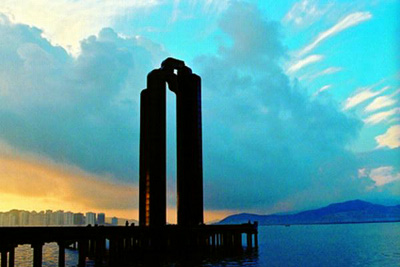

| 中华人民共和国澳门特别行政区（北纬22°11'，东经113°33'）位于中国大陆东南沿海，地处珠江三角洲的西岸，隔海东望即是香港，北方的澳门半岛连接广东省珠海市，而南方则是氹仔、路环和路氹城所组成的大岛，属海岛市，暂未有正式的名称。 | .jfif) |
| 中华人民共和国澳门特别行政区（北纬22°11'，东经113°33'）位于中国大陆东南沿海，地处珠江三角洲的西岸，隔海东望即是香港，北方的澳门半岛连接广东省珠海市，而南方则是氹仔、路环和路氹城所组成的大岛，属海岛市，暂未有正式的名称。 | |

| 澳门三面环海，一年中有两次太阳直射，辐射强烈，蒸发旺盛，具有热量丰富、水汽充足、高温多雨的气候特点，属亚热带海洋季风气候，同时亦带有热带气候的特性，年平均气温约22.3℃，全年温差变化在11～14℃。2007年全年平均气温为23.2℃。春、夏季潮湿多雨，秋、冬季的相对湿度较低且雨量较少。台风季节为5-10月，以7-9月最为频密。澳门北靠亚洲大陆，南临热带海洋南海，既受到来自大陆的中高纬大气环流影响，也受来自海洋的低纬大气环流影响，所以冬夏季环流转换明显，是典型的季风气候区。 |  |